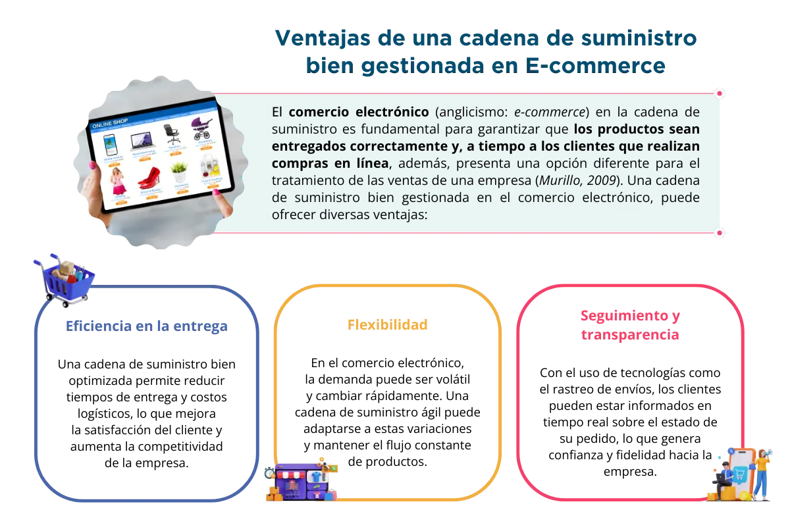
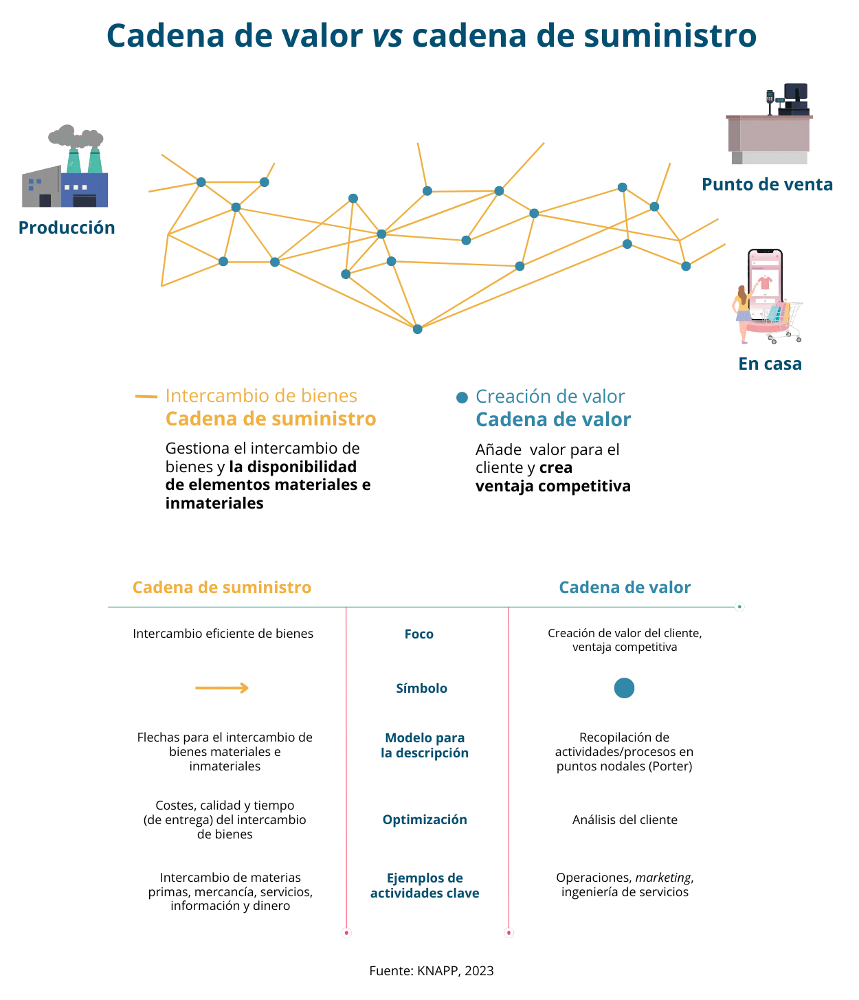
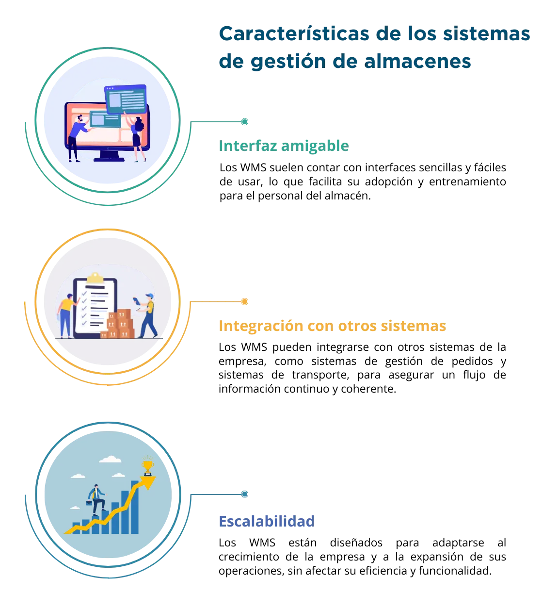

build Introducción
La logística es un tema crucial para las pymes al desempeñar un papel protagónico en la eficiencia y la productividad, es fundamental para reducir costos y mejorar la satisfacción del cliente, esto tiene como núcleo a la cadena de suministro.
La cadena de suministro es el engranaje que asegura que los productos y servicios lleguen de manera eficiente y oportuna a los clientes, maximizando la satisfacción y minimizando los costos. En la actualidad, optimizar la cadena de suministro y la logística no solo potencia la competitividad de las empresas, sino que también garantiza la resiliencia ante desafíos como interrupciones globales, fluctuaciones en la demanda y cambios en la regulación. Es el diferenciador clave entre quedarse rezagado o liderar en un mercado en constante evolución.
En este eje temático abordaremos el proceso de logística donde encontrarás un desarrollo conceptual del tema y el detalle de herramientas para la toma de decisiones basadas en conocimiento, todo ello encaminado a generar las competencias que te permitan maximizar los resultados de tu empresa. Podríamos por tanto empezar por responder, ¿qué es exactamente la cadena de suministro? Vamos a verlo de manera sencilla.
La cadena de suministro es como un gran equipo que trabaja para llevar un producto o servicio desde su creación hasta las manos del cliente. Es seguir el viaje que hace el producto o servicio, pasando por diferentes etapas y manos antes de que pueda llegar al destinatario final. Una definición más formal, podría ser, que la cadena de suministro es el conjunto de actividades y procesos interconectados que permiten la producción, distribución y entrega de bienes o servicios desde su origen hasta el consumidor. Esto implica la coordinación de proveedores, fabricantes, distribuidores y minoristas para garantizar que los productos lleguen de manera eficiente y oportuna al mercado (Fontalvo-Herrera et al., 2019).
Ahora bien, ¿qué tiene que ver esto con la era digital? ¡Mucho! La tecnología ha revolucionado la forma en que operamos la cadena de suministro. Antes, todo el proceso era más lento y se basaba en documentos físicos y llamadas telefónicas. Pero hoy en día, la era digital ha llegado para cambiarlo todo.
En esta era podemos usar sistemas y software inteligentes para llevar un mejor control de la cadena de suministro. Por ejemplo, podemos utilizar sensores para rastrear y monitorear nuestros productos en tiempo real. Esto nos ayuda a saber dónde están en cada momento y si están en buen estado.
También, la era digital nos permite conectar a todos los miembros de la cadena de suministro en una misma red. Así, podemos compartir información de forma más rápida y eficiente. Por ejemplo, si una tienda necesita más productos, puede enviar una señal a la fábrica para que produzcan más, ¡todo en cuestión de segundos!
Estos tiempos digitales nos han dado herramientas para analizar datos y tomar decisiones más inteligentes. Podemos ver patrones y tendencias en la demanda de productos, lo que nos ayuda a estar preparados y evitar escasez o exceso de inventario.
Pero esto no es todo. La era digital también ha revolucionado la forma en que compramos y recibimos productos. Ahora podemos hacer compras en línea desde la comodidad de nuestro hogar y recibir los productos en la puerta de nuestra casa en cuestión de días.
La próxima vez que compres un producto, recuerda que detrás de él hay una cadena de suministro soportada por el trabajo desarrollado por personas que se apoyan en sistemas digitales. ¡Es un gran equipo que trabaja en conjunto para llevar lo que necesitamos hasta nuestras manos!
troubleshoot ¿Qué es la logística?
La logística alude al proceso de planificar, implementar y controlar eficientemente el movimiento y almacenamiento de bienes, servicios e información desde el punto de origen hasta el punto de consumo. “Es llevar el producto justo al lugar justo, en el momento justo, con las condiciones justas y al precio justo” Solleiro (2023).
En la era digital, la logística se define como la gestión estratégica y eficiencia de la cadena de suministro, integrando tecnologías digitales y sistemas de información para optimizar el movimiento de bienes, servicios y datos desde que se generan hasta el consumidor, asegurando una entrega, precisa y oportuna.
Tiene el propósito de satisfacer las necesidades del cliente y permite que una empresa opere de manera eficiente y pueda obtener mejores resultados empresariales. En esencia, la logística implica la gestión efectiva de todos los aspectos relacionados con la cadena de suministro.
1 Introducción a la cadena de suministro
La cadena de suministro es un proceso integral que involucra la coordinación de actividades y flujos de materiales, información y dinero, desde la obtención de materias primas hasta la entrega del producto final al cliente. “Una cadena de suministro consta de dos o más organizaciones legalmente separadas que están conectadas por flujos de materiales, de información y financieros” (Cannella, 2010). Es, además, una red compleja que conecta a proveedores, fabricantes, distribuidores, minoristas y clientes, en pro de satisfacer la demanda del mercado de manera eficiente y efectiva.
Un punto crucial por considerar es el cliente, quien forma parte integral de cualquier cadena de suministro. De hecho, el propósito principal de cualquier cadena de suministro es satisfacer las necesidades del cliente y, en el proceso, generar utilidades para la pyme.
El objetivo de toda cadena de suministro debe ser maximizar el valor total generado. El valor neto que genera una cadena de suministro es la diferencia entre lo que el cliente paga por el producto final y los costos en que incurre la cadena para cumplir con el pedido del cliente. Aquí hacemos referencia a esta diferencia como el valor agregado de la cadena de suministro.
Y, ¿Qué importancia tiene el comercio electrónico en la cadena de suministro?
El comercio electrónico (anglicismo: e-commerce) en la cadena de suministro es fundamental para garantizar que los productos sean entregados correctamente y, a tiempo a los clientes que realizan compras en línea, además, presenta una opción diferente para el tratamiento de las ventas de una empresa (Murillo, 2009). Una cadena de suministro bien gestionada en el comercio electrónico, puede ofrecer diversas ventajas:
Ejemplo de caso de éxito:
Un ejemplo destacado de aplicación efectiva de la cadena de suministro en el comercio electrónico es Amazon. La compañía ha logrado desarrollar una cadena de suministro altamente eficiente, que le permite entregar productos a sus clientes en tiempos récord. Gracias a su sistema de gestión de almacenes, rutas de entrega optimizadas y un robusto sistema de seguimiento, Amazon ha logrado establecer altos estándares en la entrega de productos en el comercio electrónico.
En el entorno dinámico del comercio electrónico, la eficiente gestión de la cadena de suministro desempeña un papel fundamental. Desde la selección de proveedores y la optimización de inventarios hasta la entrega final al cliente, cada etapa y componente de esta cadena cobra una importancia vital para garantizar la satisfacción del cliente y el éxito empresarial. Exploraremos a continuación, los elementos esenciales y las etapas clave que conforman esta cadena en el contexto del comercio electrónico.
- Proveedores: Son las empresas o individuos que suministran las materias primas o productos necesarios para la fabricación de los productos finales. Los proveedores son un eslabón fundamental en la cadena, ya que su eficiencia y calidad impactan directamente en el resultado final.
- Fabricantes: Son aquellos que transforman las materias primas en productos terminados. Los fabricantes deben asegurarse de producir con eficiencia y mantener altos estándares de calidad para satisfacer la demanda del mercado.
- Distribuidores: Son intermediarios que se encargan de almacenar y transportar los productos desde los fabricantes hasta los minoristas o directamente a los clientes. Contribuyen a la distribución eficiente de los productos y pueden abarcar desde mayoristas hasta empresas de transporte.
- Minoristas: Pueden ser tiendas, plataformas en línea o negocios que venden directamente a los consumidores finales. Los minoristas son clave para llegar al público objetivo y brindar una experiencia de compra satisfactoria.
- Clientes: Son el eslabón final de la cadena de suministro. Representan la demanda y, por tanto, el motor que impulsa todo el proceso. La satisfacción del cliente es crucial para mantener un flujo continuo de ventas y garantizar la rentabilidad.
Etapas clave de la cadena de suministro:
Dadas las cinco etapas de una cadena de suministro como se muestra en la figura 1, todos los procesos en una cadena de suministro pueden dividirse en los siguientes cuatro ciclos de proceso, como se muestra en la figura 2.
- Ciclo de pedido del cliente
- Ciclo de reabastecimiento
- Ciclo de fabricación
- Ciclo de adquisición
Cada ciclo ocurre en la interfaz entre dos etapas sucesivas de la cadena de suministro. No todas las cadenas de suministro muestran una clara separación entre los cuatro ciclos. Por ejemplo, es probable que una cadena de suministro de supermercado, en la que un detallista almacena inventarios de productos terminados y coloca pedidos de reabastecimiento con un distribuidor, tenga los cuatro ciclos separados. Por ejemplo, Dell, reconocida empresa que desarrolla y vende productos informáticos, en contraste, pasa por alto al detallista y al distribuidor al vender directamente a sus clientes.
- Venta y comercialización (ciclo de pedido del cliente): Se refiere a la promoción y venta de los productos a través de canales de venta, como tiendas físicas o en línea, para llegar al público objetivo.
- Almacenamiento y distribución (ciclo de reabastecimiento): Involucra la gestión y el traslado de los productos a través de la red de distribución para llevarlos desde los fabricantes hasta los minoristas o directamente a los clientes.
- Producción o fabricación (ciclo de fabricación): Es la etapa en la que se transforman las materias primas en productos terminados mediante procesos de fabricación eficientes y de calidad.
- Adquisición y abastecimiento (ciclo de adquisición): Implica identificar, seleccionar y negociar con proveedores para obtener las materias primas y productos necesarios para la producción.
Ejemplo de caso de éxito:
Un ejemplo de éxito en la cadena de suministro en el comercio electrónico es Zappos, una tienda en línea de calzado y ropa. Esta empresa ha desarrollado una cadena de suministro altamente eficiente, lo que les permite ofrecer entregas rápidas y gratuitas a sus clientes. Han logrado mantener un amplio inventario en sus almacenes y han implementado un sistema de gestión logística muy efectivo. Página web de Zappos.
La relación entre la cadena de suministro y la satisfacción del cliente en el comercio electrónico es crucial para el éxito de cualquier empresa que venda productos en línea. La cadena de suministro tiene un impacto directo en la experiencia del cliente y su nivel de satisfacción. Veamos cómo estas dos áreas están estrechamente relacionadas:
- Entrega oportuna y eficiente: Una cadena de suministro bien gestionada permite que los productos sean entregados a tiempo. Los clientes esperan recibir sus pedidos en el plazo prometido, y una entrega puntual aumenta la satisfacción del cliente. Por el contrario, los retrasos en la entrega pueden generar insatisfacción y afectar la reputación de la empresa.
- Calidad del producto: La cadena de suministro también influye en la calidad del producto final. Si los proveedores y fabricantes cumplen con altos estándares de calidad, los productos entregados a los clientes serán de mejor calidad, lo que generará una mayor satisfacción del cliente. Por el contrario, si hay problemas en la cadena de suministro que afectan la calidad del producto, los clientes estarán descontentos.
- Servicio postventa y atención al cliente: Una cadena de suministro eficiente no solo se enfoca en la entrega del producto, sino también en brindar un buen servicio postventa. La atención al cliente y la capacidad de resolver problemas de manera rápida y efectiva influyen en la satisfacción del cliente. Si la cadena de suministro no es ágil en responder a solicitudes o resolver incidencias, los clientes pueden sentirse frustrados y desatendidos.
Aquí podrás ver diferentes elementos clave para determinar el éxito en los procesos de logística. El tiempo de respuesta es la cantidad de tiempo que trascurre hasta que un cliente recibe un pedido. La variedad del producto es la cantidad de diferentes productos y su configuración, que ha ofrecido una red de distribución. La disponibilidad del producto es la probabilidad de tener un producto en existencia cuando llega el pedido de un cliente. La experiencia del cliente incluye la facilidad con que los clientes pueden colocar y recibir pedidos y el grado al cual se personaliza esta experiencia. También incluye aspectos puramente de experiencia, como la posibilidad de saborear una taza de café́ y el valor que el personal de ventas proporciona (Chopra, S., 2013).
Ejemplo de caso de éxito:
Un ejemplo destacado de cómo una cadena de suministro eficiente influye en la satisfacción del cliente es el gigante del comercio electrónico Alibaba. La empresa ha establecido una cadena de suministro muy sólida que permite a los vendedores y compradores de su plataforma llevar a cabo transacciones de manera rápida y segura. Alibaba ha invertido en logística y sistemas de entrega ágiles, lo que ha mejorado significativamente la experiencia de compra para sus clientes.
2 Introducción a la logística en el comercio electrónico
La logística es un proceso integral que se encarga de planificar, implementar y controlar el flujo eficiente de bienes, servicios e información, desde el punto de origen hasta el punto de consumo, con el objetivo de satisfacer las necesidades del cliente. En otras palabras, es el arte de organizar y coordinar todos los aspectos relacionados con el transporte, almacenamiento y distribución de productos para que lleguen a su destino final de manera oportuna y en óptimas condiciones.
La logística es un proceso integral que se encarga de planificar, implementar y controlar el flujo eficiente de bienes, servicios e información, desde el punto de origen hasta el punto de consumo, con el objetivo de satisfacer las necesidades del cliente. En otras palabras, es el arte de organizar y coordinar todos los aspectos relacionados con el transporte, almacenamiento y distribución de productos para que lleguen a su destino final de manera oportuna y en óptimas condiciones.
Es un error muy común confundir la cadena de suministro con la cadena logística, parecen sinónimos, pero son dos conceptos muy diferentes y al mismo tiempo, complementarios. A pesar de ser tan distintos se sirven el uno del otro para realizar su función. Más adelante detallaremos cuáles son las diferencias entre la cadena logística y la cadena de suministro.
La cadena logística se basa en la planificación y control de los bienes que se envían a los clientes, en la cantidad adecuada, con la calidad requerida y el tiempo concretado.
Dentro de la cadena logística se organiza el transporte necesario para realizar los envíos, el mantenimiento y control de la flota, el almacenamiento y la organización de la mercancía que está vendida, así como los inventarios; se estudia la forma en que la oferta y la demanda actuarán en un futuro a medio/largo plazos. Su objetivo es la entrega eficiente de los productos, desde la fabricación hasta el cliente final.
El profesional de la cadena logística es el encargado de supervisar y gestionar el producto desde que entra al almacén hasta que se le realiza la entrega a los distribuidores o clientes finales.
En cambio, la cadena de suministro engloba todas las tareas que se llevan a cabo en la cadena logística más otras. En la cadena de suministro se controla toda la corriente de trabajo en la fabricación de los productos, desde la adquisición de las materias primas hasta la entrega al cliente, pasando por la producción de bienes y el almacenamiento de éstos. Es decir, la cadena logística es una parte de la cadena de suministro.
El responsable de la cadena de suministro es un profesional que se compromete a gestionar las materias primas, de forma que se provea a la producción de forma eficiente. Debe asegurarse de que las necesidades de la demanda queden cubiertas y estar en continua mejora y adaptación al entorno tan cambiante que viven hoy en día las empresas.
Respecto a los servicios, la cadena logística intenta minimizar los costos, pero ofreciendo un servicio impecable, para que la entrega a los clientes sea de calidad. En cambio, la cadena de suministro se preocupa por la adquisición de materias primas, que no sean muy caras para que los costos de producción sean menores.
La organización es fundamental, tanto para la cadena logística como para la cadena de suministro, pero para la primera lo es porque así logrará la entrega de los productos en el menor tiempo posible. En el caso de la segunda, se encarga de organizar muy bien cada parte del proceso desde la adquisición de las materias primas, la fabricación hasta llegar a la última parte, que es la cadena logística, y no fallar en la entrega al usuario final.
La cadena logística se encarga de entregar a tiempo el producto, ya que la cadena de suministro intenta que el tiempo de servicio sea cada vez menor para que la cadena global sea más ágil y eficiente.
Cuando se habla de la optimización de la cadena logística es porque ésta ha mejorado gracias a nuevos métodos de distribución de mercancías. La cadena de suministro tiene que buscar y establecer nuevos procesos para que dicha cadena sea dinámica, ágil y eficiente y no llegue a la obsolescencia.
Y ¿Por qué es importante la logística en el comercio electrónico?
En el comercio electrónico, la logística juega un papel crucial para brindar una experiencia de compra satisfactoria a los clientes. A continuación, exploraremos algunas de las razones por las que la logística es importante en el comercio electrónico y, cómo nos ayuda el entender su importancia en nuestra toma de decisiones empresariales.
- Entrega rápida y confiable: Los clientes en línea esperan recibir sus productos lo más rápido posible. Una logística bien planificada y eficiente permite que los productos sean entregados en tiempos reducidos, lo que mejora la satisfacción del cliente y aumenta la probabilidad de que vuelvan a comprar en el mismo sitio.
- Gestión de inventario: El comercio electrónico implica mantener inventarios en almacenes para responder a la demanda de los clientes. Una logística adecuada permite una gestión eficiente del inventario, evitando problemas de escasez o exceso de productos.
- Experiencia del cliente: Una logística eficiente contribuye a una experiencia de cliente positiva. La entrega puntual, el seguimiento del pedido y la resolución de problemas de manera rápida y efectiva son aspectos cruciales para generar confianza y fidelidad en el cliente.
Ejemplo de caso de éxito:
Un caso de éxito en la aplicación de la logística en el comercio electrónico es el de la empresa estadounidense Amazon. La compañía ha invertido en tecnologías y sistemas logísticos avanzados que le permiten entregar productos en tiempos récord. Su estrategia de almacenamiento y distribución en centros logísticos permite que los productos estén más cerca de los clientes, agilizando las entregas y mejorando la satisfacción del cliente.
Ejemplo de caso de éxito:
Un caso de éxito en la gestión logística en línea es el de la empresa de comercio electrónico ASOS. La compañía ha logrado implementar una logística ágil y efectiva que le permite entregar productos de moda en tiempos cortos a clientes en todo el mundo. ASOS ha invertido en tecnología y sistemas avanzados para gestionar sus almacenes y optimizar las rutas de entrega.
Sin duda, la logística del comercio electrónico es un componente esencial para asegurar que los productos sean entregados a los clientes de manera rápida y eficiente, ¡es lo que toda empresa desea! En este tema, exploraremos algunas de las tendencias más relevantes en la logística del comercio electrónico, cómo están impactando la industria y cómo las empresas pueden aprovechar estas tendencias para mejorar sus operaciones logísticas.
Ejemplo 1: Seguimiento en tiempo real
Imagina que una empresa vende productos en línea y utiliza la logística 4.0 para mejorar la entrega de sus pedidos. Al utilizar sensores de IoT en sus paquetes, pueden rastrear en tiempo real la ubicación y el estado del envío. Esto permite a los clientes seguir el progreso de sus pedidos desde el almacén hasta su destino final, brindando una mayor transparencia y confianza en el proceso de entrega.
Ejemplo 2: Optimización de rutas y almacenes
Una empresa de logística que opera múltiples almacenes puede utilizar la logística 4.0 para optimizar la gestión de su inventario y las rutas de entrega. Mediante el uso de algoritmos de aprendizaje automático y análisis de datos, pueden predecir la demanda y planificar el movimiento de sus productos de manera más eficiente. Esto les permite reducir los tiempos de espera y los costos de transporte, mejorando la satisfacción del cliente y la rentabilidad de la empresa.
Ejemplo 3: Robótica en la preparación de pedidos
En un centro de distribución, los robots pueden ser utilizados en la logística 4.0 para automatizar la preparación de pedidos. Los robots pueden moverse de manera autónoma y rápida por los estantes, recogiendo y empacando los productos requeridos en los pedidos. Esto acelera el proceso de preparación y reduce la posibilidad de errores humanos, lo que mejora la eficiencia general del centro de distribución.
Hagamos un alto para una reflexión: la logística 4.0 es un enfoque innovador que incorpora tecnologías avanzadas para mejorar la gestión de la cadena de suministro en el comercio electrónico y otros sectores. Al aprovechar el poder de la IoT, la IA y la robótica, las empresas pueden optimizar sus operaciones, ofrecer entregas más rápidas y personalizadas y, mejorar la satisfacción del cliente.
Ejemplo de caso de éxito:
Un ejemplo exitoso de cómo las tendencias en la logística del comercio electrónico pueden impactar positivamente a una empresa es el caso de Shopify. Esta plataforma de comercio electrónico ha integrado tecnologías avanzadas en su logística, permitiendo a los vendedores gestionar fácilmente sus inventarios, rastrear pedidos en tiempo real y ofrecer opciones de envío flexibles. Gracias a estas estrategias, Shopify ha ganado popularidad entre los vendedores y ha mejorado la experiencia de compra para los clientes.
3 Cadena de valor y cadena de suministro
La cadena de valor es una herramienta primordial para entender cómo se crean y entregan los productos y servicios de una empresa desde su concepción hasta que llegan al cliente final, representa de manera sistémica las actividades de una organización (Quintero, J., & Sánchez, J., 2006).
En el contexto del comercio electrónico, la cadena de valor juega un papel clave para identificar las actividades y procesos que agregan valor a la experiencia del cliente y mejorar la eficiencia operativa. Veamos en qué consiste la cadena de valor en el comercio electrónico y cómo se analiza, de tal manera que, con el conocimiento, podamos generar competencias que nos permitan abordar desafíos en nuestra gestión empresarial. Así mismo, no puede verse como actividades independientes, estas se relacionan por medio de puntos comunes de conexión (Canto, J. V., 2013).
La cadena de valor es una representación visual de todas las actividades que una empresa realiza para crear, producir, comercializar y entregar un producto o servicio al cliente. En el comercio electrónico, la cadena de valor abarca desde la obtención de materias primas hasta el proceso de venta en línea, la gestión de inventarios, el empaquetado, la entrega y el servicio postventa. Cada etapa de la cadena de valor es una pieza esencial para que el producto llegue al cliente de manera satisfactoria.
Análisis de la cadena de valor en el comercio electrónico
El análisis de la cadena de valor en el comercio electrónico implica identificar y evaluar cada actividad y proceso involucrado en la creación y entrega del producto o servicio. Se busca comprender cómo cada eslabón de la cadena afecta el costo y el valor agregado al producto final. Además, el análisis permite detectar áreas de mejora, eliminar ineficiencias y optimizar recursos para mejorar la competitividad de la empresa en el mercado.
Cadena de valor vs. cadena de suministro
La cadena de suministro se enfoca en llevar productos de los proveedores a los clientes, mientras que la cadena de valor incluye todas las etapas internas y externas de la empresa para crear, vender y entregar un producto o servicio. Ambas son esenciales para mejorar la eficiencia y el valor en una organización, pero abordan aspectos diferentes del proceso empresarial. En resumen, la cadena de suministro se centra en la logística, mientras que la cadena de valor abarca todo el ciclo de creación de valor para el cliente. Como lo muestra la figura 3.
Ejemplo de caso de éxito:
Un ejemplo exitoso de aplicación del análisis de la cadena de valor en el comercio electrónico es el de la empresa de moda Zara. La compañía ha diseñado su cadena de valor de manera que sus productos puedan pasar rápidamente de la fase de diseño a la producción y luego a las tiendas en línea y físicas. Zara ha invertido en tecnologías y logística que le permiten tener una cadena de suministro ágil, lo que le da una ventaja competitiva al ofrecer productos de moda actuales y con entregas rápidas. A continuación, el sitio web de Zara.
Hemos venido abordando, cómo la cadena de suministro en el comercio electrónico es un componente crítico, para asegurar que los productos lleguen a los clientes de manera oportuna y eficiente. Sin duda, la optimización de esta cadena implica identificar áreas de mejora y aplicar estrategias para aumentar la eficiencia y reducir costos. En este tema, exploraremos cómo optimizar la cadena de suministro en el comercio electrónico y su impacto en la empresa.
Ejemplo de caso de éxito:
Un ejemplo exitoso de optimización de la cadena de suministro es el de la empresa de comercio electrónico Amazon. La compañía ha invertido en tecnologías avanzadas y sistemas de automatización en sus centros de distribución. Además, ha establecido alianzas con proveedores logísticos para mejorar la eficiencia en la entrega de sus productos. Gracias a estas estrategias, Amazon ha logrado reducir los tiempos de entrega y mejorar la satisfacción de sus clientes.
Las estrategias de colaboración con proveedores y socios logísticos son contundentes, pues hacen parte de nuestra cadena de suministro de excelencia, se vuelven compañeros de nuestro negocio, y para ti como responsable de contribuir a la mejora de la pyme, te dará ventajas prácticas en tu negocio como:
Asimismo, la colaboración efectiva con proveedores y socios logísticos es fundamental para optimizar la cadena de suministro en el comercio electrónico.
En este tema, exploraremos tres estrategias que las empresas pueden implementar para fortalecer la colaboración con sus socios logísticos y proveedores y, veremos cómo esto puede beneficiar la eficiencia de la cadena de suministro y la satisfacción del cliente.
- Comunicación abierta y transparente: Una de las estrategias clave para una colaboración exitosa es mantener una comunicación abierta y transparente con los proveedores y socios logísticos. Compartir información relevante, objetivos comerciales y desafíos permite a todas las partes involucradas trabajar de manera coordinada y tomar decisiones informadas.
- Establecimiento de metas y objetivos compartidos: Alinearse en torno a metas y objetivos comunes es esencial para fortalecer la colaboración. Esto implica establecer indicadores clave de rendimiento (KPI) compartidos y trabajar juntos para mejorar el rendimiento de la cadena de suministro en áreas clave, como la eficiencia en la entrega y la reducción de costos.
- Uso de tecnología colaborativa: La tecnología juega un papel crucial en la colaboración con proveedores y socios logísticos. Utilizar plataformas y sistemas compartidos que permitan el intercambio de datos en tiempo real, seguimiento de inventarios y planificación conjunta puede mejorar la visibilidad y la coordinación en toda la cadena de suministro.
Ejemplo de caso de éxito:
Un ejemplo de éxito en la colaboración con proveedores y socios logísticos es el de la cadena de supermercados Walmart. Walmart ha establecido una red de colaboración con sus proveedores para compartir información sobre la demanda y los niveles de inventario en tiempo real. Esto permite a los proveedores adaptar su producción y envío según las necesidades de Walmart, lo que resulta en una cadena de suministro más ágil y eficiente.
4 Modelos de logística push y pull
Para profundizar en estos conceptos, sugerimos la lectura “El otro lado de la logística, una visión estratégica: tendencias del aprovisionamiento en las cadenas de valor para el desarrollo sostenible” de (Aguilar Rascón, O. C., Posada Vázquez, R., & Soto Sevilla, M. S., 2012).
Ejemplo de caso de éxito:
El modelo pull es especialmente adecuado para productos con demanda variable y difícil de predecir. En el comercio electrónico, muchas empresas utilizan este modelo para ofrecer productos personalizados o productos que tienen una demanda más incierta, como artículos de lujo y productos especializados.
5 Sistemas de gestión de almacenes
Los sistemas de gestión de almacenes Warehouse Management System (WMS, por sus siglas en inglés), son herramientas tecnológicas fundamentales para optimizar el manejo de inventarios y las operaciones en los almacenes de una empresa (Ramaa, A., Subramanya, K., & Rangaswamy, T. M. (2012).
En este tema, exploraremos las funciones y características de los WMS, su importancia en la logística del comercio electrónico, y cómo su aplicación puede mejorar la eficiencia y la satisfacción del cliente. Empecemos por abordar a través de un listado, cuáles son las funciones de los sistemas de gestión de almacenes:
- Gestión de inventarios: Los WMS registran y rastrean la ubicación y cantidad de cada producto en el almacén. Esto permite una gestión precisa y actualizada del inventario, evitando la sobreventa o falta de productos.
- Recepción y despacho de productos: Los WMS ayudan a registrar y controlar la entrada y salida de productos del almacén, asegurando que los envíos se realicen de manera correcta y oportuna.
- Optimización de almacenamiento: Los WMS utilizan algoritmos para determinar la ubicación óptima de los productos dentro del almacén, facilitando el acceso y reduciendo los tiempos de búsqueda.
- Seguimiento de pedidos: Los WMS permiten rastrear el estado de los pedidos en tiempo real, desde su recepción hasta la entrega final, brindando mayor visibilidad tanto para la empresa como para el cliente.
- Control de calidad: Los WMS pueden incluir funciones para verificar y registrar la calidad de los productos almacenados, lo que garantiza que solo los productos en buen estado sean enviados a los clientes.
Adicionalmente, es necesario conocer las características de los sistemas de gestión de almacenes, de tal manera, que nos permita identificar en nuestros negocios los componentes y tomar decisiones basados en el conocimiento. Veamos cuáles son estas características:
A continuación, un ejemplo de software de WMS: https://youtu.be/nZCWz3Dzx2U
Video creación de inventarios Oracle (2019) https://www.youtube.com/watch?v=qyvqVdkCg2M
Ejemplo de caso de éxito:
Un caso exitoso de la aplicación de un sistema de gestión de almacenes es el de la empresa de comercio electrónico eBay. Al implementar un WMS en sus almacenes, eBay pudo mejorar la precisión del inventario, acelerar la preparación de pedidos y optimizar sus operaciones de logística, lo que resultó en entregas más rápidas y una mejor experiencia para sus clientes.
La automatización y las tecnologías no solo impulsan la eficiencia, precisión y velocidad en las operaciones de almacenamiento y distribución de productos, sino que también ofrecen beneficios significativos para el comercio en línea. A continuación, detallaremos las tecnologías clave que están transformando el panorama.
Sugerimos ver el siguiente video https://www.youtube.com/watch?v=yn0xcXWomR0
RFID, identificación por radiofrecuencia
Utiliza las ondas de radio para capturar la información de las etiquetas permitiendo la identificación de objetos. Facilita la identificación de cientos de objetos a la vez, su aplicación en la gestión de almacenes ha evolucionado y empresas como Walmart y Zara han implementado estos sistemas para optimizar la gestión de inventarios y mejorar la visibilidad de sus productos.
ERP, Planificación de Recursos Empresariales
Alude a un software de gestión empresarial que integra un conjunto de aplicaciones útiles a las pymes. El concepto de ERP se originó en la década de 1960. En la actualidad, empresas como SAP, Oracle y Microsoft ofrecen soluciones de ERP. La colaboración entre sistemas ERP y SGA es esencial para la logística eficiente. Ejemplos notables de implementación incluyen a Amazon y Procter & Gamble.
En el siguiente video se puede apreciar cómo funciona la tecnología RFID: https://www.youtube.com/watch?v=eisKP_CRI1c
Para profundizar en la herramienta ERP, sugerimos ver el siguiente video: https://www.youtube.com/watch?v=7_r7rGHmh1c
Tecnología y picking
El picking también denominado pick and pack, es un término relacionado con la gestión logística y tiene que ver con el proceso de preparación de pedidos optimizando los pasos a seguir. Las soluciones de Picking, como Pick to Light, Put to Light y Pick by Voice, han ido evolucionando desde la década de 1980. Empresas como Amazon, DHL y UPS han adoptado estas tecnologías para mejorar la eficiencia en la preparación de pedidos.
Sugerimos ver el siguiente video https://www.youtube.com/watch?v=-PKWyQ2DNbk
Picking visual con realidad aumentada
El picking visual se refiere a utilizar señales visuales o indicadores que permitan guiar el proceso de recopilación e identificación de productos en un almacén. Los productos deben contar con etiquetas visuales, códigos de colores o señalizaciones para facilitar la identificación y recogida de los productos de una manera rápida y eficiente.
La realidad aumentada (RA) es una tecnología que suporpone información digital, como gráficos o datos, sobre la vista del mundo real, esto ayuda a los trabajadores a ubicar los productos de una manera más precisa, tienen información en tiempo real respecto a la ubicación de los productos. Para implementar el picking visual se debe diseñar un sistema de etiquetado claro y visible en tanto, que en la realidad aumentada, se debe contar con el apoyo de dispositivos como Smart glasses o aplicaciones móviles que suporpongan información digital en tiempo real sobre el entorno físico del almacen. Empresas como DHL y Boeing han explorado y aplicado esta tecnología para optimizar procesos de picking y embalaje.
Sugerimos ver el siguiente video https://www.youtube.com/watch?v=I8vYrAUb0BQ
Sistemas de visión artificial
Los sistemas de visión artificial utilizan tecnología avanzada para procesar información visual y permiten la toma de decisiones automatizadas en entornos logísticos. Estos sistemas pueden incluir cámaras, sensores y software especializado para realizar diversas tareas, como el control de inventario, el seguimiento de productos, la clasificación y la supervisión de la calidad. Inspección de productos: Identificar defectos o anomalías en los productos mediante el análisis visual, asegurando la calidad del inventario.
Empresas como Amazon y Alibaba implementan sistemas de visión artificial para mejorar la precisión en el control de calidad y en los procesos de picking.
Seguimiento y localización
Utilizar cámaras para rastrear la ubicación de productos en tiempo real, mejorando la eficiencia en la gestión de inventario.
Picking automatizado
Guiar robots o sistemas automatizados en el proceso de recogida de productos utilizando información visual para identificar y seleccionar artículos.
Optimización de rutas
Analizar visualmente el diseño del almacén para mejorar la eficiencia en la distribución y el movimiento de productos.
Sugerimos ver el siguiente video https://www.youtube.com/watch?v=r6BvTweiyDI
Ejemplo de caso de éxito:
Un caso de éxito en la aplicación de la automatización y tecnologías en la gestión de almacenes es el de la empresa de comercio electrónico Alibaba. Utilizan robots autónomos para el almacenamiento y la preparación de pedidos en sus almacenes. Estos robots pueden moverse por el almacén de manera eficiente y preparar los pedidos con una precisión sorprendente, lo que ha permitido a Alibaba procesar una gran cantidad de pedidos diariamente.
Sugerimos ver el siguiente video
5 exoesqueletos para trabajar https://www.youtube.com/watch?v=u8gOl9xounA
6 Gestión de inventarios
Mantener un inventario adecuado, permite satisfacer la demanda de los clientes sin incurrir en costos excesivos de almacenamiento. En este tema, exploraremos métodos para controlar y optimizar los niveles de inventario, así como ejemplos de su aplicación y su impacto en el comercio electrónico.
Métodos para controlar y optimizar los niveles de inventario:
Análisis de la demanda: El análisis histórico y el pronóstico de la demanda son fundamentales para determinar los niveles de inventario necesarios. Conocer los patrones de compra de los clientes y las estacionalidades permite ajustar el inventario en consecuencia.
Los pronósticos son herramientas importantes para prever la demanda futura y tomar decisiones informadas en la gestión de inventarios. Hay tres tipos principales de modelos de pronóstico que vale la pena conocer:
Pronósticos de juicio:
Estos se basan en el criterio o la intuición. Son útiles cuando no hay datos históricos o son limitados, como al introducir nuevos productos. Métodos incluyen encuestas y la técnica análoga.
Pronósticos de Series de Tiempo:
Suponen que la demanda futura depende solo de la demanda pasada. Por ejemplo, si las ventas de este año fueron un 7% más altas, el pronóstico para el próximo año sería el 7% más que las ventas actuales. Las técnicas incluyen promedios móviles simples y ponderados.
Pronósticos de causa y efecto:
Relacionan la demanda con variables específicas, como el lanzamiento de una campaña publicitaria. Este enfoque requiere datos detallados y comprensión de las relaciones causales. Cada tipo tiene sus ventajas y desafíos.
Los pronósticos de juicio son útiles cuando se carece de datos históricos, pero deben manejarse con cuidado. Los de series de tiempo dependen del pasado y pueden no captar cambios repentinos en el contexto del mercado. Los de causa y efecto son más complejos, pero pueden ser más precisos con datos adecuados. La elección del método depende del contexto y de la disponibilidad de datos.
A continuación, una tabla ejemplo.

Fuente: Libro: Murphy, Jr., and A. Michael Knemeyer.Logística Contemporánea. 11 a ed. México: Pearson, 2015.
Gestión de inventario ABC:
La gestión de inventario ABC es una estrategia clasificatoria que categoriza los productos en función de su importancia relativa para el negocio. Esta metodología, también conocida como análisis ABC, se basa en el principio de Pareto, que establece que un pequeño porcentaje de elementos contribuye significativamente a la mayoría de los resultados. Aquí se explica cómo funciona:
Clasificación por importancia:
Clase A (20% de los productos): Representa los productos de mayor importancia, ya que generan aproximadamente el 80% de los ingresos o utilidades. Estos artículos requieren una atención y control detallados debido a su impacto significativo en la rentabilidad.
Clase B (30% de los productos): Este grupo abarca productos de importancia moderada, que contribuyen alrededor del 15% al 20% de los ingresos. Se les presta atención, aunque no tanto como a la Clase A.
Clase C (50% de los productos): Incluye productos de menor importancia, que contribuyen a aproximadamente el 5% de los ingresos. Aunque son numerosos, su contribución individual es relativamente baja.
Aplicación de políticas diferenciadas:
Clase A: Debido a su importancia, los productos de Clase A pueden estar sujetos a políticas de inventario más estrictas, como recuentos frecuentes, sistemas de reabastecimiento automáticos y una mayor precisión en las previsiones de demanda.
Clase B: Se aplican políticas intermedias en comparación con la Clase A y la Clase C. El control del inventario es menos riguroso, pero aún se presta atención a las tendencias de demanda y al reabastecimiento oportuno.
Clase C: Dado que estos productos contribuyen en menor medida a los ingresos, las políticas de inventario pueden ser menos intensivas. Se pueden utilizar estrategias más flexibles, como reabastecimientos menos frecuentes y niveles de inventario más amplios.
Optimización de recursos:
La gestión de inventario ABC permite asignar recursos de manera eficiente. Al concentrar los esfuerzos en los productos de mayor impacto económico, las empresas pueden maximizar la rentabilidad y minimizar el riesgo de pérdida.
Análisis continuo:
La clasificación de productos en las categorías A, B y C no es estática. Se debe realizar un análisis continuo para ajustar las clasificaciones según cambios en la demanda, tendencias del mercado y otros factores que puedan afectar la importancia relativa de los productos.
Una herramienta práctica: ¿cuándo hacer un pedido?
Un tema importante sobre la gestión de inventarios se relaciona con cuándo debemos pedir productos. Hay dos formas comunes de hacerlo: ordenar una cantidad fija cada vez que se necesita reponer (sistema con cantidad de pedido fija) o realizar pedidos en momentos específicos, independientemente de cuánto se haya vendido (sistema con intervalo de pedido fijo).
En el sistema con cantidad de pedido fija, se puede cambiar de acuerdo con cuánto tiempo pasa entre pedidos, pero la cantidad que se pide se mantiene constante. Imagina una tienda que siempre pide 200 cajas de refrescos. Pueden hacer un pedido el 3 de enero, otro el 6 de enero (tres días después), y otro el 11 de enero (cinco días después).
Respecto al sistema con intervalo de pedido fijo, el tiempo entre pedidos es constante, pero la cantidad que se pide puede cambiar. Por ejemplo, piensa en alguien que va de compras todos los domingos. Aunque siempre va de compras cada siete días, la lista de compras (es decir, lo que necesita del inventario) puede variar de una semana a otra.
Es necesario que haya un punto de reorden o disparador (es decir, el nivel del inventario en el que se realiza un pedido de reposición) para que exista un eficiente sistema, con cantidad de pedido fija (Murphy, Jr., et al., 2015).
Fuente: Lifeder. Recuperado 2023 de https://www.lifeder.com/punto-reorden/
El punto de reorden, conocido como ROP, por sus siglas en inglés, es un concepto importante para la optimización de los inventarios, es relativamente fácil de calcular, especialmente bajo condiciones de certidumbre; un punto de reorden es igual a la demanda diaria (DD) media en unidades por la duración del ciclo de reposición (RC), (Murphy, Jr., et al., 2015).
ROP = DD x RC
Por ejemplo, si la demanda diaria media es de 40 unidades y el ciclo de reposición es de 4 días, el punto de reorden es 40 x 4, o 160 unidades; en otras palabras, cuando el nivel del inventario llega a 160 unidades, se realiza un nuevo pedido. Bajo condiciones de incertidumbre, el punto de reorden puede calcularse de manera similar; la única modificación consiste en que se incluye un factor para el inventario de seguridad (SS):
ROP = (DD x RC) + SS
Una herramienta práctica ¿Cuánto pedir?
Un tema que ha sido una inquietud constante en la gestión de inventarios es determinar cuánto inventario se debe pedir en un momento dado. El concepto clave aquí es la Cantidad Económica de Pedido (EOQ, por sus siglas en inglés), que se trata de calcular la cantidad adecuada de pedido considerando dos costos: el costo de mantener el inventario y el costo de hacer el pedido.
Matemáticamente, la EOQ se puede calcular; una presenta la respuesta en dinero y la otra en unidades. En términos monetarios, podemos suponer que se usan $1000 de un artículo en particular cada año, los costos del pedido son de $25 por pedido enviado y los costos de mantenimiento de inventario son de 20 por ciento (Murphy, Jr., et al., 2015).
Debe tenerse en cuenta que rara vez, o nunca, las organizaciones gestionan inventarios en un entorno caracterizado por la certeza de los ocho supuestos presentados anteriormente para la cantidad económica de pedido. Por ejemplo, habría que pensar cómo un evento inesperado podría afectar el supuesto del ritmo continuo, constante y conocido de la demanda. Una ilustración notable implica la muerte del músico David Bowie ocurrida en 2016; hubo un tremendo aumento en las ventas de la música grabada por su grupo en las semanas inmediatas posteriores a su deceso.
Dado que el mundo empresarial contemporáneo está marcado por un alto grado de incertidumbre, el modelo básico de la EOQ puede ajustarse para tener en cuenta una o más condiciones de incertidumbre. Por ejemplo, una cantidad económica de pedido se puede calcular en condiciones de incertidumbre en el tiempo de entrega o en condiciones de incertidumbre en la demanda y el tiempo de entrega. Estas y otras modificaciones aumentan la complejidad matemática en el cálculo de una cantidad económica de pedido, por lo que dichos cálculos están más allá del alcance de este texto.
Existen varias herramientas y software en español que pueden ayudar a gestionar inventarios en línea de manera eficiente, en este apartado proveemos algunas de las opciones más populares y prácticas:
Existen herramientas gratuitas para gestionar inventarios en línea en español. Aunque algunas de ellas pueden tener limitaciones en cuanto a funcionalidades avanzadas o el número de productos que se pueden administrar, son una excelente opción para pequeñas empresas y emprendedores que buscan una solución económica para controlar su inventario en línea. Aquí hay algunas opciones de herramientas gratuitas:
Es importante mencionar que, si bien estas herramientas son gratuitas, algunas pueden ofrecer planes pagos con funcionalidades adicionales o limitaciones levantadas para usuarios que requieran mayores capacidades de gestión de inventario. Es recomendable evaluar las necesidades específicas del negocio antes de elegir una herramienta, ya que cada empresa tiene requisitos diferentes en cuanto a su gestión de inventario.
7 Gestión de órdenes de compra, recepción y despacho de productos
El proceso de gestión de órdenes es primordial para asegurar que los productos sean entregados de manera eficiente y satisfactoria a los clientes. A continuación, presentamos el proceso, paso a paso, desde la recepción de la orden hasta la entrega final al cliente:
- Recepción de la orden: El proceso comienza cuando el cliente realiza una compra en línea a través del sitio web o plataforma de comercio electrónico. La orden se recibe automáticamente en el sistema de gestión de pedidos.
- Validación de la orden: Antes de procesar la orden, se realiza una validación para asegurarse de que los datos proporcionados por el cliente sean correctos y que los productos estén disponibles en el inventario.
- Preparación y empaquetado: Una vez validada la orden, se procede a preparar los productos para su envío. Se seleccionan los artículos del inventario y se empaquetan de manera segura y adecuada para su transporte.
- Asignación de la compañía de transporte: Se selecciona la compañía de transporte encargada de realizar la entrega de la orden. Esto puede ser una empresa de mensajería local, un servicio de paquetería o una empresa de transporte especializada.
- Generación de etiquetas y rastreo: Se generan las etiquetas de envío y se realiza el rastreo de los paquetes para que tanto el vendedor como el cliente puedan seguir el estado de la entrega en tiempo real.
- Entrega al transportista: Los paquetes se entregan al transportista para que comiencen su ruta de entrega hacia el cliente.
- Entrega al cliente: Finalmente, el transportista realiza la entrega de los productos al cliente en la dirección indicada durante el proceso de compra.
Ejemplo: Un cliente realiza una compra de una computadora portátil en un sitio web de comercio electrónico. La orden es recibida por el sistema y validada para verificar la disponibilidad del producto y los datos del cliente. Luego, el equipo encargado selecciona la computadora portátil del inventario, la empaqueta cuidadosamente y genera la etiqueta de envío. La compañía de transporte recoge el paquete y lo entrega al cliente en su domicilio.
En el punto anterior vimos el proceso de gestión de órdenes desde la recepción hasta la entrega al cliente, ahora lo conectaremos con el cómo agilizarlo. En el mundo empresarial, tanto en pequeñas como grandes empresas de servicios, la pregunta recurrente es cómo ahorrar tiempo y mejorar constantemente la calidad del servicio. La digitalización ha demostrado ser la clave para responder a esta interrogante. Todo comienza con la transformación de la gestión de órdenes de trabajo.
Antes de profundizar es importante recordar la función esencial de una orden de trabajo. Este documento permite controlar y programar las actividades, siendo el corazón de la gestión de mantenimiento, instalación y/o reparación.
Para el cliente, una orden de trabajo representa un aval del servicio que se le proporciona. Para el supervisor, se convierte en una herramienta para registrar los avances de la empresa y el tiempo trabajado por el personal. Mientras que, para el técnico, es una asignación clara de las tareas a realizar y la base para crear un informe posterior.
La digitalización de las órdenes de trabajo es una solución efectiva para mejorar la eficiencia y calidad del servicio. Al adoptar herramientas digitales, se pueden lograr varios beneficios:
- Ahorro de tiempo: Los procesos manuales y papeleos suelen ser lentos y propensos a errores. Con la digitalización, se agiliza la creación, asignación y seguimiento de órdenes de trabajo, lo que permite un uso más eficiente del tiempo del personal y una respuesta más rápida a las necesidades del cliente.
- Mejora de la comunicación: Las herramientas digitales permiten una comunicación fluida entre el personal, los supervisores y los clientes. Los técnicos pueden recibir órdenes directamente en sus dispositivos móviles y enviar actualizaciones en tiempo real. Esto reduce la posibilidad de malentendidos y mejora la coordinación del equipo.
- Mayor precisión y calidad del servicio: La digitalización permite incluir detalles específicos, imágenes y documentación relevante en las órdenes de trabajo. Esto asegura que los técnicos tengan toda la información necesaria para realizar el trabajo de manera precisa y eficiente, lo que conduce a una mayor satisfacción del cliente.
Ejemplo: Una empresa de instalación y reparación de equipos electrónicos implementa una plataforma digital para la gestión de órdenes de trabajo. Los técnicos reciben notificaciones en sus dispositivos móviles con la información detallada de cada trabajo, incluyendo ubicación, lista de tareas y documentación técnica. Los clientes pueden dar su aprobación digitalmente y recibir actualizaciones en tiempo real sobre el estado del trabajo. Esta digitalización mejora la comunicación, aumenta la eficiencia y garantiza una mayor precisión en la prestación del servicio.
El proceso de surtido de órdenes es un punto neurálgico en todas las operaciones de almacén y es crucial para mantener altos niveles de competitividad y desempeño en la organización. Para lograr la satisfacción del cliente final, es esencial revisar y optimizar continuamente este proceso. En nuestra serie de contenidos "Pasos para Optimizar su Control de Almacén", compartimos algunas prácticas recomendadas para alcanzar la máxima efectividad en el surtido de órdenes:

Con estas prácticas, logrará agilizar el picking de su almacén, reducir errores y aumentar la satisfacción de sus clientes. Además, optimizará el control del almacén al determinar existencias reales de sus productos con mayor precisión.
8 Optimización de rutas
La optimización de rutas en la logística del comercio electrónico es un proceso esencial para garantizar una entrega eficiente y puntual de los productos a los clientes. Consiste en encontrar las rutas más eficaces y económicas para transportar los productos desde los almacenes o centros de distribución hasta los destinos finales, minimizando los costos de transporte y el tiempo de entrega.
El objetivo principal de la optimización de rutas es maximizar la eficiencia en la distribución de productos, asegurando que se cumplan los plazos de entrega y reduciendo los gastos asociados al transporte. Al mejorar la planificación y la gestión de las rutas, se obtienen diversos beneficios:
- Reducción de costos: Al minimizar la distancia y el tiempo de viaje, se disminuyen los gastos de transporte y se optimiza el uso de recursos como combustible y vehículos.
- Mayor puntualidad: La optimización de rutas permite entregar los productos en tiempo y forma, lo que mejora la satisfacción del cliente y fortalece la reputación de la empresa.
- Aumento de la productividad: Con rutas más eficientes, se aprovecha mejor el tiempo de los conductores y se reduce el tiempo de espera en los puntos de entrega.
- Menor impacto ambiental: Al reducir la distancia recorrida y la emisión de gases contaminantes, se contribuye a la preservación del medio ambiente.
Ejemplo:
Una empresa de comercio electrónico vende productos a nivel nacional y cuenta con almacenes en diferentes ciudades. Antes de implementar la optimización de rutas, realizaban entregas de manera poco planificada, lo que resultaba en trayectos largos y costosos, además de retrasos en las entregas.
Luego de aplicar la optimización de rutas con ayuda de un software especializado, la empresa logró reducir la distancia total recorrida por sus vehículos y el tiempo de viaje. Esto se logró agrupando las entregas por zonas y buscando la secuencia óptima para cada ruta. Como resultado, se disminuyeron los costos de transporte y se mejoró la puntualidad en las entregas. Los clientes notaron la diferencia y la empresa fortaleció su reputación, lo que llevó a un aumento en las ventas y a una mayor fidelidad de los clientes.
En conclusión, la optimización de rutas es un aspecto clave en la logística del comercio electrónico, ya que permite reducir costos, mejorar la eficiencia y aumentar la satisfacción de los clientes. Mediante una planificación cuidadosa y el uso de tecnología especializada, las empresas pueden alcanzar mayores niveles de competitividad y éxito en el mercado.
Existen varios métodos y algoritmos utilizados para encontrar rutas eficientes de entrega en la logística del comercio electrónico. Estos métodos buscan optimizar la planificación de las rutas para minimizar costos y tiempos de entrega. A continuación, se presentan algunos de los enfoques más comunes:

Cabe destacar que la elección del método o algoritmo depende del tamaño y complejidad del problema, así como de los recursos computacionales disponibles. En la práctica, a menudo se combinan varios métodos para encontrar soluciones óptimas o cercanas a ellas en la planificación de rutas de entrega en el comercio electrónico.
Existen varios software y herramientas especializadas en la optimización de rutas de entrega en la logística del comercio electrónico. Estas herramientas utilizan algoritmos avanzados y técnicas de optimización para encontrar las mejores rutas posibles, considerando factores como distancia, tiempo de viaje, restricciones de entrega y costos. Algunos de los softwares más populares incluyen:
- Route4Me: Es una plataforma de optimización de rutas que permite planificar y optimizar rutas para múltiples destinos en tiempo real. Ofrece características como geo codificación, seguimiento de vehículos y análisis de datos.
- OptimoRoute: Esta herramienta ofrece una solución basada en la nube para la optimización de rutas de entrega y planificación de flotas. Permite programar rutas, calcular el tiempo estimado de llegada y realizar seguimiento en tiempo real.
- MyRouteOnline: Es un software en línea que ofrece planificación de rutas optimizadas para entregas, recolecciones y servicios de campo. Permite importar direcciones desde hojas de cálculo y exportar rutas a dispositivos GPS.
- LogiNext Mile: Esta plataforma de optimización de última milla ofrece una variedad de herramientas para planificar, optimizar y rastrear entregas en tiempo real. Utiliza algoritmos avanzados para encontrar las rutas más eficientes.
- Descartes Route Planner: Esta herramienta ofrece una solución integral para la planificación de rutas y entregas. Incluye características como geo codificación, programación de entregas y análisis de eficiencia.
- Locus Dispatcher: Es una plataforma de optimización de rutas que utiliza algoritmos avanzados para planificar y optimizar rutas de entrega en tiempo real. También ofrece seguimiento en vivo y análisis de datos.
Estos son solo algunos ejemplos de software disponibles en el mercado. Es importante evaluar las necesidades específicas de cada empresa y las características que ofrece cada herramienta antes de tomar una decisión. Algunos softwares pueden ser más adecuados para empresas pymes con necesidades básicas, mientras que otros pueden ser más apropiados para empresas más grandes con operaciones complejas.
Aunque muchos de los softwares especializados en optimización de rutas tienen costos asociados, también existen algunas opciones de software gratuito que ofrecen funcionalidades básicas para la planificación de rutas. Aquí encontrarás algunas alternativas gratuitas:
s importante tener en cuenta que, si bien estas opciones son gratuitas, es posible que tengan ciertas limitaciones en términos de la cantidad de puntos de entrega o características avanzadas disponibles. Para empresas con operaciones más complejas o que requieran funciones adicionales, es posible que sea necesario considerar opciones de software de pago con capacidades más completas.
Software de logística y distribución para optimizar cadena de suministro.
Sugerimos ver el siguiente video https://www.youtube.com/watch?v=C9KxSq33J64
9 Herramientas de logística y envío en el comercio electrónico
Las herramientas Sendcloud, Easy Envío, Shipit y Paack son soluciones de logística y envío que se utilizan en el comercio electrónico para gestionar pedidos, inventarios, empaque, envío de productos a los clientes, seguimiento y atención postventa. A continuación, te proporciono una descripción de cada una de ellas y una comparativa para que puedas evaluar cuál se adapta mejor a tus necesidades de negocio:
Comparativa:
Sendcloud, Easy Envío y Shipit son plataformas de logística que se enfocan en facilitar la gestión de envíos y devoluciones para tiendas en línea. Ofrecen funcionalidades similares, como la automatización de etiquetas de envío y seguimiento en tiempo real. En tanto que Paack se diferencia al enfocarse en entregas en el mismo día o en franjas horarias específicas, utilizando algoritmos avanzados para predecir el momento exacto de la entrega.
Sendcloud y Shipit ofrecen integraciones con múltiples proveedores logísticos, lo que brinda a los usuarios opciones para seleccionar la compañía de envío más conveniente. Easy Envío, por su parte, se destaca por su enfoque en simplificar el proceso de cotización y selección de tarifas de envío.
Paack ofrece entregas flexibles y personalizadas, lo que puede ser especialmente atractivo para empresas que buscan brindar un alto nivel de servicio al cliente. Al momento de elegir entre estas herramientas, es importante considerar las necesidades específicas de tu negocio, el tamaño de tu tienda en línea y las características que más se ajusten a tus requerimientos logísticos. Cada plataforma tiene sus ventajas y desventajas, por lo que es recomendable probarlas y evaluar cuál se adapta mejor a tus operaciones.
Referencias
- Aguilar Rascón, O. C., Posada Vázquez, R., & Soto Sevilla, M. S. (2012). El otro lado de la logística, una visión estratégica: tendencias del aprovisionamiento en las cadenas de valor para el desarrollo sostenible. Revista del Centro de Investigación. Universidad La Salle, 10(38), 221-232.
- John, C., John, L., Robert, N., & Brian, G. (2017). Administración de la Cadena de Suministro (10th ed.). Cengage Learning Editores SA de CV. https://up.vitalsource.com/books/9786075265254
- KNAPP, (2023). Cadena de valor vs. cadena de suministro: ¿cuál es la diferencia? Recuperado de https://www.knapp.com/es/saber/blog/diferencia-cadena-de-valor-vs-cadena-de-suministro/
- Barno, S. y. (2014). Canvas para arquitectos. Obtenido de https://stepienybarno.es/blog/2014/03/02/canvas-para-arquitectos/
- Dosdoce.com. (2014). Nuevos modelos de negocio en la era digital. España: CEDRO. Obtenido de http://www.dosdoce.com/upload/ficheros/noticias/201409/modelos_de_negocio_pdf.pdf
- Evans, P. (2014). De la deconstrucción a los big data: cómo la tecnología está transformando las empresas. En BBVA, Reinventar la empresa en la era digital. Obtenido de https://www.bbvaopenmind.com/wp-content/uploads/2015/01/BBVA-OpenMind-libro-Reinventar-la-Empresa-en-la-Era-Digital-empresa-innovacion1-1.pdf
- EVPA Knowledge Centre. (2018). A Practical Guide to Venture Philanthropy and Social Impact Investment (4a ed.). EVPA.
- Maslow, A. (1943). A Theory of Human Motivation. Psychological Review, 370-396.
- Maslow, A. (1954). Motivación y personalidad. Madrid: Ediciones Díaz de Santos, S. A. Obtenido de https://batalloso.com/wp-content/uploads/2021/09/Maslow-Abraham-Motivacion-Y-Personalidad.pdf
- OIT. (2020). Resumen ejecutivo: Modelos de negocio para un trabajo decente. The Lab: Market systems for decent work. Obtenido de https://www.ilo.org/wcmsp5/groups/public/---ed_emp/documents/publication/wcms_738589.pdf
- Osterwalder, A., & Pigneur, Y. (2010). Generación de modelos de negocio: Un manual para visionarios, revolucionarios y retadores. Barcelona: Deusto.
- Osterwalder, A., Pigneur, Y., Bernarda, G., & Smith, A. (2014). Diseñando la propuesta de valor: Cómo crear los productos y servicios que tus clientes están esperando. Deusto.
- Saez H., J. (2021). ¿Cuáles son los modelos de negocios digitales más utilizados? Obtenido de IEBS Business School: https://www.iebschool.com/blog/modelos-negocios-digitales-mas-utilizados-digital-business/
- Shum, Y. (2020). Pirámide de Maslow ¿Qué es? necesidades de los usuarios. Obtenido de https://yiminshum.com/piramide-maslow-que-es/
- The Body Shop International Limited. (2023). Natura & Co. Obtenido de https://www.thebodyshop.com/es-es/nosotros/nuestra-historia/natura-and-co/a/a00005
- Von Hippel, E. (1986). Lead Users: A Source of Novel Product Concepts. Management Science, 32(7), 791-805. Obtenido de http://www.jstor.org/stable/2631761
loyalty Beneficios potenciales de la logística
La implementación de la Cadena de Suministro en la era digital ofrece una serie de beneficios potenciales significativos para las pequeñas y medianas empresas (pymes). Estos beneficios les permiten mejorar su eficiencia, su competitividad y la satisfacción del cliente. Algunos de los beneficios clave son:
En resumen, la implementación de la cadena de suministro en la era digital ofrece una amplia gama de beneficios para las pymes. Desde una mayor eficiencia y reducción de costos hasta una mejora en la satisfacción del cliente y la resiliencia empresarial, la digitalización de la cadena de suministro se convierte en un elemento crucial para el crecimiento y éxito a largo plazo de las pequeñas y medianas empresas.
account_tree Proceso